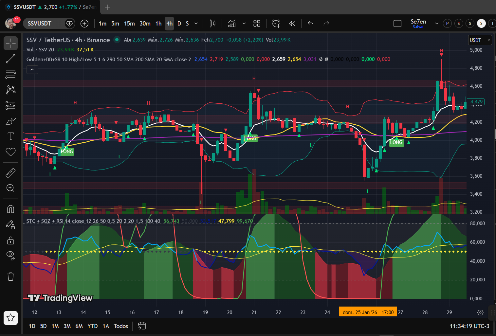
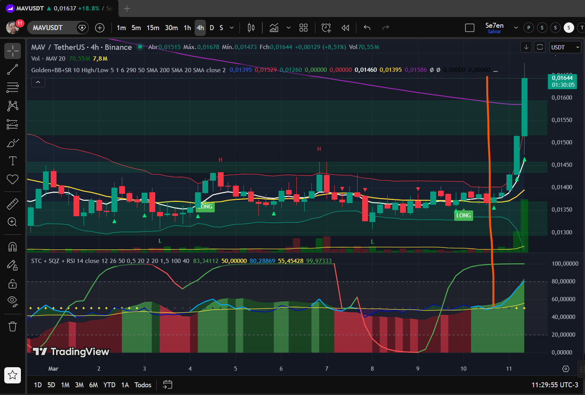
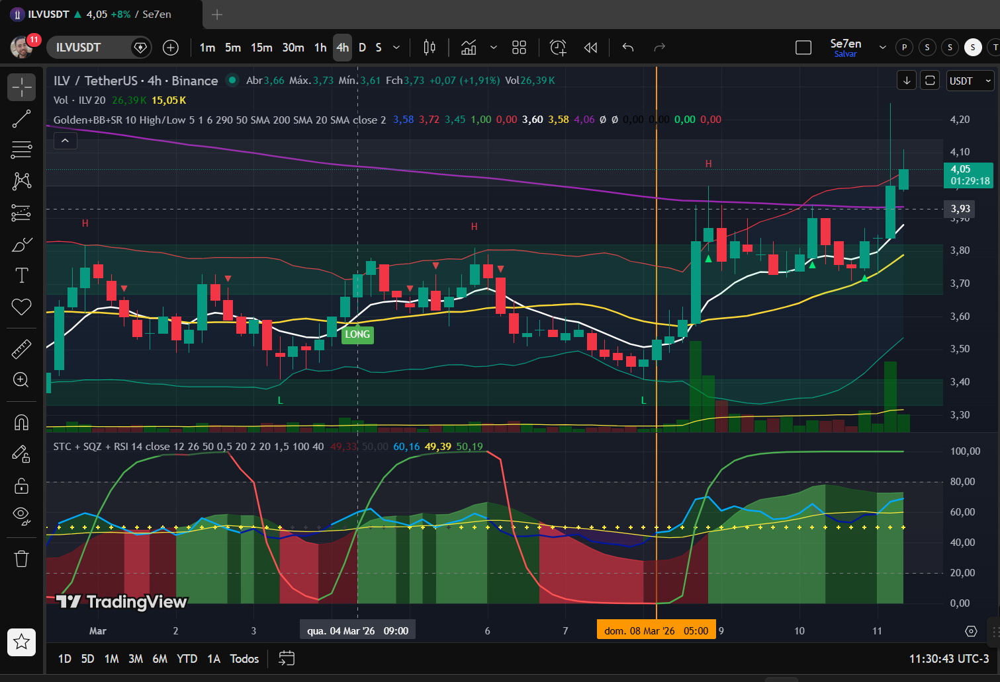
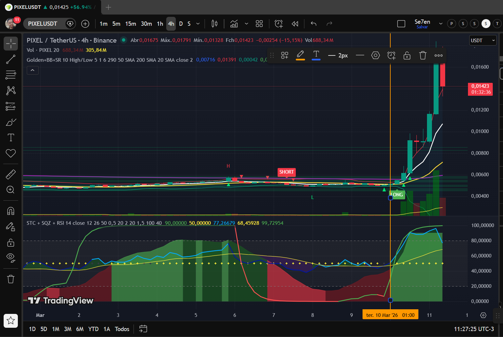
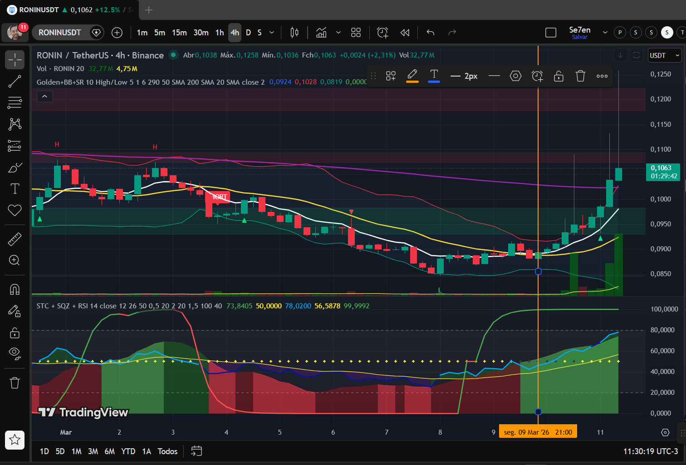
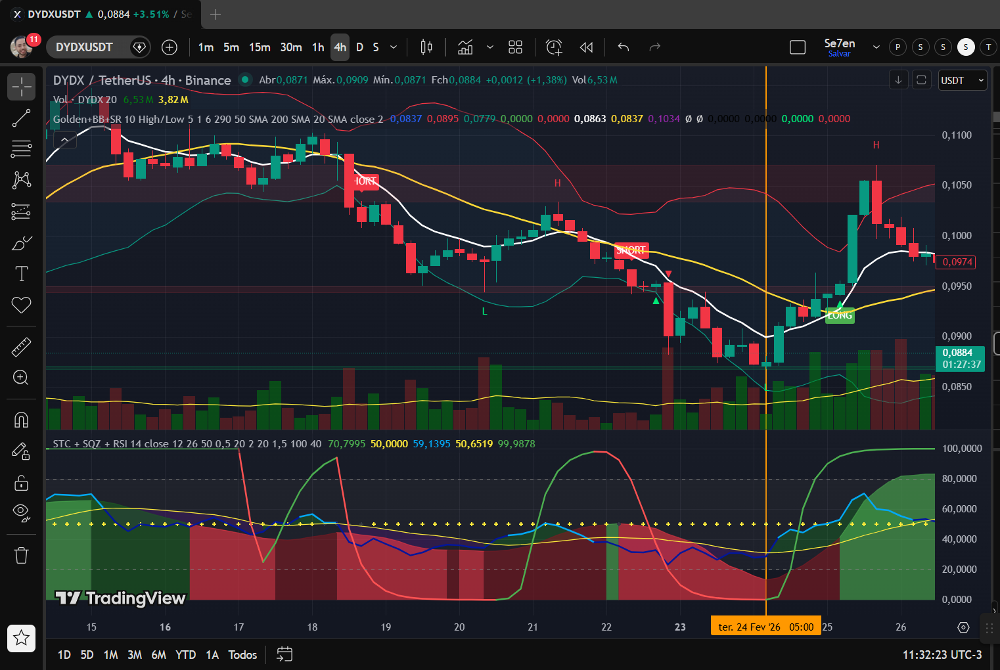
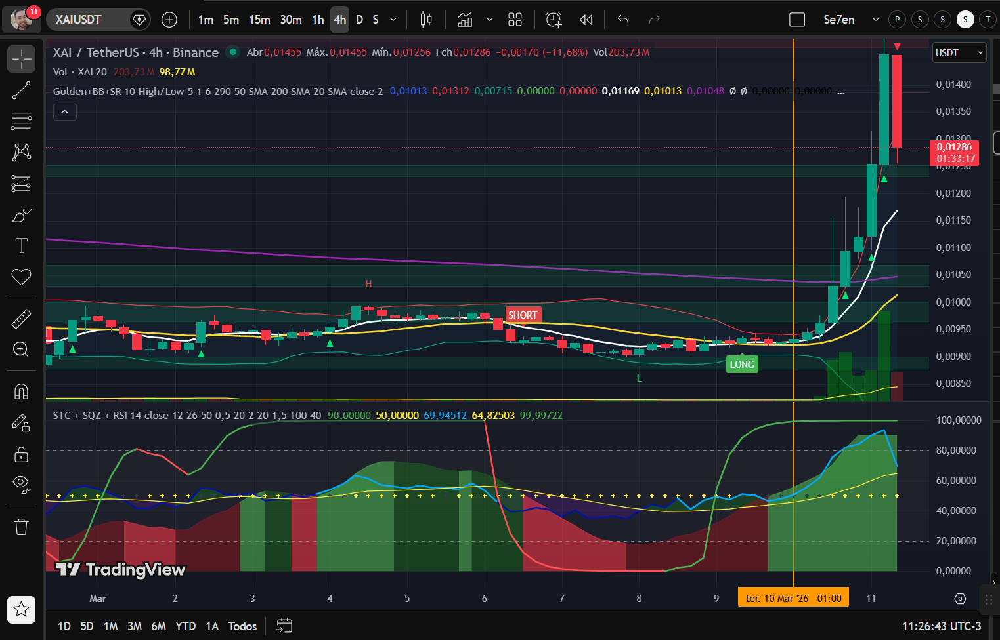
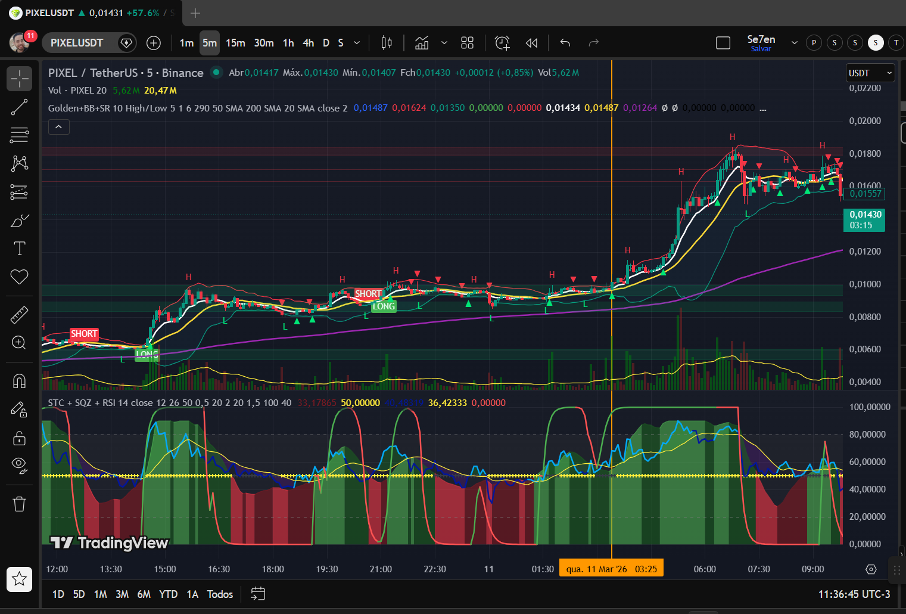

Relatório técnico gerado pelo analista sênior Marcelo Vega • 11/03/2026
| Ativo | Timeframe | Padrão Detectado | Qualidade | Retorno Esperado | Status |
|---|---|---|---|---|---|
| SSVUSDT | 4h | Squeeze Release | ★★★★★ | +12% a +36% | ✅ ENTRADA |
| MAVUSDT | 4h | God Candle | ★★★★ | +15% explosivo | ⚠️ DIFÍCIL |
| ILVUSDT | 4h | Range Breakout | ★★★★ | +8% a +15% | ✅ ENTRADA |
| PIXELUSDT | 4h | Acumulação Pós-Drop | ★★★★ | +3% a +8% | ✅ MELHOR R/R |
| RONINUSDT | 4h | Trend Following | ★★★ | +10% a +20% | ⚠️ ENTRADA CARA |
| DYDXUSDT | 4h | Reversão de Fundo | ★★★ | +6% a +10% | ⚠️ RISCO MÉDIO |
| XAUSDT | 4h | Parabolic Run | ★★ | Indef. | ⚠️ EXAUSTÃO |
| PIXELUSDT | 5m | Ruído Intraday | — | — | ❌ NÃO OPERAR |







